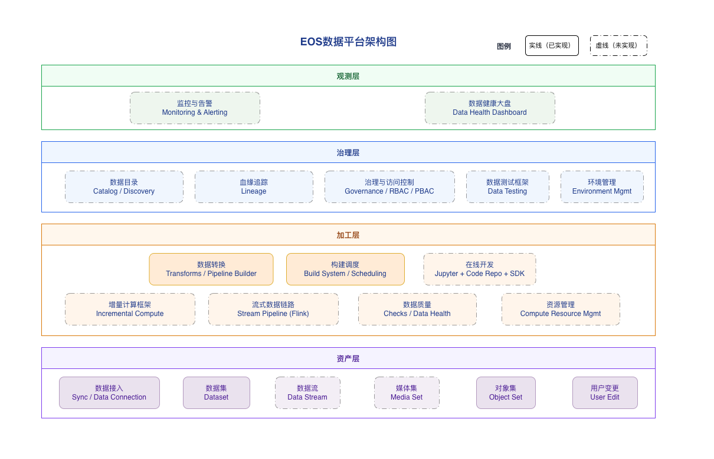

路径即依赖，是表达层最重要的抽象
通过 Input() / Output() 声明数据集路径，平台就能自动构建 DAG、感知依赖与调度关系，降低手工编排成本。
Topic 01
表达层决定开发心智。Palantir 的第一层优势，不是把 Spark 封装得更漂亮，而是把“如何描述数据开发”做成了可复用的平台契约。
Conclusions
通过 Input() / Output() 声明数据集路径，平台就能自动构建 DAG、感知依赖与调度关系，降低手工编排成本。
装饰器、pipeline.py 注册入口和可发现的 Transform 集合，让开发逻辑天然可被平台理解、追踪和治理。
当逻辑可以被沉淀为带契约的算子，低代码、代码优先和平台治理才能共享同一个能力底座。
Mechanisms
@transform_df、@transform、@transform_pandas 对应不同开发范式。pipeline.py 负责注册和发现，使平台可以集中感知所有 Transform。
从调研里的算子平台方案看，输入输出声明、参数声明、Schema 推导和执行绑定需要分层设计，才能同时支撑编译期校验和运行期执行。
Palantir 的做法说明，算子丰富只是结果，平台更底层的价值是让逻辑可被发现、被拼装、被治理和被复用。
Implications
Sources